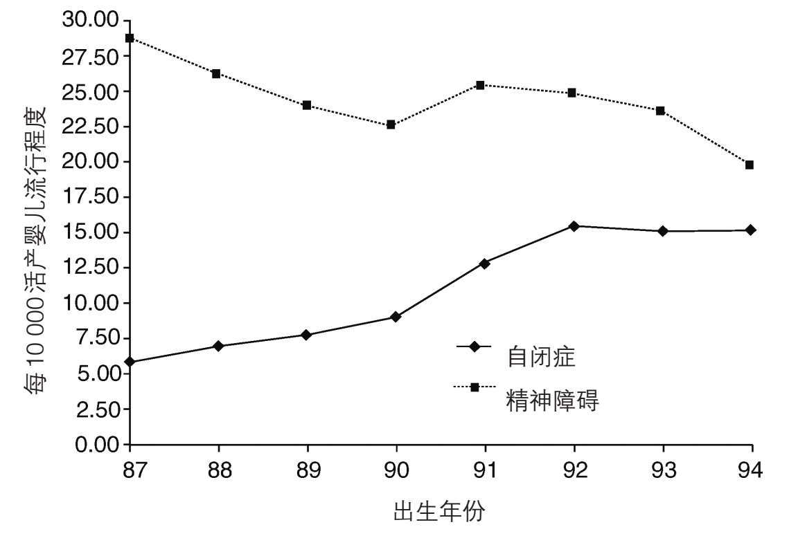

黛安娜担心米基宝宝时，令她恐慌的一个原因是，她觉得到处充斥着自闭症病例迅猛增加的报道。人们像对待瘟疫一般谈之色变。
可以明确的事实是，美国自闭症协会的网站表明，自1990年代以来被确诊为自闭症的病例已增长了172%。其实有记录的病例迅猛增长是不可能避免的，想想人们认识自闭症才不过七十年，自闭症为世人熟知不过二十年而已。显然，现在被诊断为自闭症的儿童和成人过去不会被认为是自闭症。与人们对自闭症意识的提升相伴的，是越来越多的病例被发现。早先很多自闭症病例可能只被列为精神障碍。
加利福尼亚州的一项研究揭示了这种变化的程度。图4中精神障碍的下降正好对应自闭症病例的上升。你甚至忍不住要说，变化仅仅是因为重新贴了标签。但其实也有其他影响因素在起作用。

图4 加利福尼亚州诊断为自闭症的病例上升与诊断为精神障碍的病例下降
其中一个因素与诊断标准放宽有关，由此包括了很多轻微自闭症病例，以及正常智商和高智商的病例。而这些病例以前压根不会被诊断为自闭症。就算受到别人注意，也只是被视为比较古怪或特立独行。这个增长在图5中可见，同样基于加利福尼亚州的那项研究。